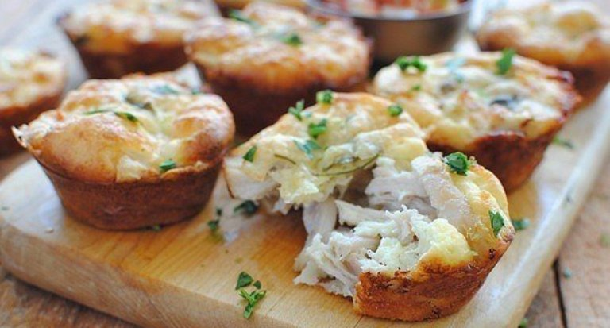

ქათმის მაფინები
- ქათმის ფილე
- პომიდორი
- ხახვი
- კვერცხი
- რძე 1%-იანი
- ყველი
- მარილი, პილპილი,მწვანილი გემოვნებით
მომზადების წესი
- ქათმის ფილისგან მოამზადეთ ფარში, მოაყარეთ მარილი, პილპილი
- ფარშს დაამატეთ ბლენდერში დაქუცმაცებული ხახვი. ჩადეთ მასა მაფინევის ფორმაში და მიეცით ჩაღრმავებული ფორმა
და შუაში ჩაუდეთ პომიდორი
- დაამატეთ ზევიდან გახეხილი ყველი და მწვანილი
- ათქვიფეთ კვერცხი და დაამატეთ მარილი, რძე და დაასხით მაფინებს

| ინგრედიენტები |
რაოდებობა |
კალორია |
| ქათმის ფილე |
200 გრ |
304 |
| პომიდორი |
95 გრ |
17 |
| ხახვი |
75 გრ |
31 |
| კვერცხი |
2 ცალი |
274 |
| რძე |
50 მლ |
31 |
| ყველი |
30 გრ |
99 |
| მარილი,პილპილი,მწვანილი |
20 გრ |
15 |